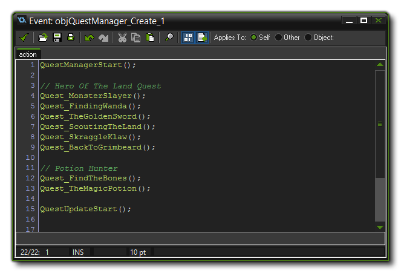

The quest system in the YoYo Games RPG engine is set up in a similar way to the Dialogue script module, and includes the ability to add various quest dialogue options, to add
different quest outcomes depending on the conditions you set, and also to give out rewards for completing quests.
It is worth noting before we continue, that all quests are controlled buy a single object, "objQuestManager", and that all the quests for the whole game need to be initialised in the Create
Event of this object. These are initialised simply by calling the appropriate script, which is explained in more detail below. The exception to this would be when using Quest Markers, which are
instances used by the engine to mark a place in the game world related to a quest. Again, this is explained in more detail below.
The Quests module scripts in the resource tree are split into two groups - The "System" group and the "Questlines" group. Most of those scripts in the "System" folder are for internal use only, so browse over them
if you wish to get an idea of what they do, but do not edit them. The only scripts in this folder that you will actually need to use in your game are those in the "Define" script group, which will be
called from the custom scripts that you add for your quests in the "Questlines" folder.
A Questline is a group of scripts that together form a full quest, and the full quest is comprised of single scripts for each part of the questline. So, for example, say you have a simple questline which is
that you have to buy a sword and then kill a dragon with it. This is a single questline, but will actually be completed through two simple quests - one to go buy the sword, and the other to slay a specific scorpion -
which you would place in an appropriately named sub-folder within the Questlines group.
All questline scripts for all quests must be placed in the object "objQuestManager" Create Event (as shown in the image below) otherwise they will not be used.

Note that they should be placed after the "QuestManagerStart" script and before the "QuestUpdateStart" script, as the first of these initialises the system, and the second is what sets the
system running. Since questlines can run across multiple rooms, the controller object is persistent so that it is always present in the game rooms. This also means that it has to have a Room Start
event, which will update the quest controller to show any quest markers for the room being entered.
Quests themselves are all initialised from a single script, and are structured much the same as the dialogue scripts. To define a quest you would first make a Questline group in the scripts resources, then add the
new quest script, naming it appropriately.
The first thing you need to do is call the script QuestNew and supply the name of the quest, and the questline that it belongs to. These strings are stored within the controller object and will be used
later for checks and other things, so make sure that they are correct!
Once the quest is initialised, you also need to tell the quest controller who (or what) is the instance that should give the player the quest. For that we use the script QuestGiver, supplying the
instance ID as shown in the room editor for the instance giving the quest. Don't forget that you can name instances in the room editor, and that name is valid to use in these scripts, making creating and
tracking quests a lot easier (see Instance Names for further details).
When you have initialised your quest you next need to set any requisites that the quest needs. A requisite is added using the script QuestRequisite, which has two arguments: the script to use to define the requisite and the value or string that the script requires. Here are a list of the scripts that can be used, along with the value or string that they require to be checked correctly:
- CheckQuestComplete - A specific quest must have been completed (takes a string, which is the quest name as defined by the script QuestNew).
- CheckQuestHandIn - A quest has been completed but has not yet been "handed in" to the quest giver (takes a string, which is the quest name as defined by the script QuestNew).
- CheckQuestInProgress - A specific quest must be in progress (takes a string, which is the quest name as defined by the script QuestNew).
- CheckItemEquipped - A specific item must be equipped by the player (takes a string, which is the name of the item as defined by the script created for it - see Items and Weapons for further details).
- CheckItemInventory - A specific item must be in the player's inventory (takes a string, which is the name of the item as defined by the script created for it - see Items and Weapons for further details).
- CheckHasCoins - The player must have a certain amount of coins (takes a real value, which is the number of coins that the player is required to have).
- CheckTalkToNpc - The player must have already spoken to another NPC (takes an instance ID, which you can get from the room editor).
- CheckExploreArea - The player must have explored an area (Takes the instanceID of the marker object, which you can get from the room editor).
Note that you can have more than one requisite, so you can set a quest to start only if the player has completed another quest and has a specific item in their inventory, for example. If you open the script
Quest_ScoutingTheLand you can see this being used.
Before we can define the actual dialogue for our quest we have to give it a context. The context is essentially the position within the quest that the dialogue should be used, and is defined by the
enum "Context", which has three values - "intro", "progress", "ending". These signify the beginning, middle or end of the quest. Note though that you do not need all three
contexts, and can define one, two or three as the quest requires. For example, your quest may not require a middle dialogue and so will only have contexts "intro" and "ending".
The quest context is defined before the dialogue for it using the script QuestDialogueContext, and if you open up any of the pre-made quest scripts (Quest_TheGoldenSword for example) you can
see it being used.
To define a quest dialogue, you need the QuestDialogueBegin(), QuestDialogue, DialogueResponse() and QuestDialogueAccept() scripts.
QuestDialogueBegin() takes an index value (which starts from 0, since it is used to define an array), which will be the index for all text in this quest dialogue.
Once you have called QuestDialogueBegin(), you can then define the text for the dialogue that you want the character to say. This will be shown on screen using a special object "objDialogueBox", and it
will use the avatar sprite you have set for the instance (see Sprite Sets for more information). To define the text, you call the QuestDialogue function with the string that
you wish the character to say. Note that the script does not take a dialogue index, and it implicitly adds the string to the last quest dialogue index that was begun. You can add as many of these as is
required to have your character say multiple lines of text.
Once you have had your character say his bit and present the quest, you can present the player with the the choice to accept the quest or decline it, as well as any other miscellaneous responses that you require.
You are not limited to having a character simply say some text and then do nothing. The options to accept or decline the quest are given by the script QuestDialogueAccept. Calling this script after a
QuestDialogue() call will add in a "response option" string that the player can then click to change the dialogue. The function QuestDialogueAccept takes two array IDs as its first and second
arguments, where the value refers to the dialogue array (as defined by QuestDialogueBegin()) that will be used for the "answer" text from the character to the player. The first answer is for accepting the
quest and the second answer is for declining. You also supply two strings to show to the player explaining the options available.
So for example, the following code defines a quest dialogue:
QuestDialogueContext(Context.intro);
QuestDialogueBegin(0);
QuestDialogue("If you could find the beast and slay it, you would be renowned throughout these lands as a hero...");
QuestDialogueAccept(1, 2, "Cool beans! I'll get right on that!", "Hmmm, no thanks, that sounds like it requires effort.");
QuestDialogueBegin(1);
QuestDialogue("Talk to Wanda The Wanderer to the North East of town to find out more about the beasts movements.");
QuestDialogueBegin(2);
QuestDialogue("Think of the Princesses, boy!");
You can also have responses to your quest dialogues that lead to further dialogue options but that don't interfere with the quest itself using the script QuestDialogueResponse. This script takes an array
ID as its first argument which is the dialogue array (as defined by QuestDialogueBegin()) that will be used for the "answer" text from the character to the player.
You can also add an option to end a quest dialogue at any time using a value of -1 for the array argument in the script QuestDialogueResponse. This will show a response with some text if the player
clicks it, and then the dialogue will finish.
As part of the quest dialogue, you can add a script to have an item (or items) given to the player. For that you call the script QuestDialogueItem as part of the dialogue being created. The script takes the script ID for the item to be given (see Items and Weapons for further details), as well as the quantity to be given. You can see an example of how this works below:
QuestDialogueContext(Context.intro);
QuestDialogueBegin(0);
QuestDialogue("So you're looking for a Golden Sword? Sure I have such an item! But it'll cost ya!");
QuestDialogueAccept(1, 2, "Oh yeah! 300 gems! Pocket change!", "No way! 300 gems! That's way too expensive!");
QuestDialogueBegin(1);
QuestDialogue("Glad to hear it! You big spender you!");
QuestDialogueItem(ItemGetGoldenSword, 1);
QuestDialogueResponse(-1, "That's all for now.");
QuestDialogueBegin(2);
QuestDialogue("300 gems is very reasonable, ya know! Just keep saving up those gems!");
The above shows a basic quest dialogue in which the player is asked to buy a sword, and he can choose to accept, decline or avoid the choice completely. If they accept, the sword item will be added to their
inventory.
The script QuestCondition is used to define a condition that is required to be met for the quest to move to the ending context. A quest is required to have at least one quest condition, but may
have more, as you can call this script multiple times to create a set of conditions that must be met, for example if the player needs a sword and 200 gold.
The script takes two arguments which are exactly the same as those for the QuestRequisites script, with two arguments: the script to use to define the completed condition and the value or string that the
script requires. You can see a list of these scripts from the Quest Requisites section above.
You can optionally add Quest Effects to your questline, so that when the given quest is completed, something happens. This is done using the script QuestEffect which has two primary arguments: the script to use to define the effect and the value or string that the script requires, although some of the effects have additional arguments which are explained in the comments below. Here are a list of the scripts that can be used, along with the value or string that they require to be carried out correctly:
- EffectStartQuest - On completing the quest, start another one (takes a string for the name of the quest to start, as defined in by the QuestNew script).
- EffectFinishQuest - This will instantly complete the quest if the other conditions defined are met by the player, and it takes no further arguments.
- EffectTakeCoins - Remove coins from the player inventory when the quest is completed.
The following two quest effects are linked to quest marker objects, which you will have placed in the game world via the room editor. You should give any quest markers unique names so that they can be easily
identified and used in the scripts that require them (see Instance Names for more details).
The following quest effect scripts require a quest marker ID as well as some optional arguments:
- EffectSpawnObject - Spawn a specific instance into the game world when the quest is complete. This can be used to spawn an enemy, an items, or anything else that you wish, and takes the quest marker ID name as it's argument, as well as the object ID of the instance to spawn.
- EffectSpawnObjectContents - This script is used to spawn a chest (or other container object) when the quest is completed at the given quest marker, and you define the container contents. The arguments it takes are the quest marker ID name, the container object ID to spawn an instance of, the object ID for the contents of the container, and finally the quantity of the object to be spawned from the container.
Below you can see some examples of quest effects being used:
QuestCondition(CheckExploreArea, markerSkraggleKlaw);
QuestCondition(EffectFinishQuest);
QuestEffect(EffectSpawnObject, markerSkraggleKlawSpawn, objSkraggleKlaw);
QuestEffect(EffectStartQuest, "Defeat Skraggle Klaw");
Since this can seem a bit complicated and daunting, below you can find a full script for setting up a quest. This is an example script to show you the basics of the structure, but your own quest scripts will be somewhat different, although still with the same basic overview.
QuestNew("Finding Wanda", "Hero Of The Land");
QuestGiver(npcWandaTheWanderer);
QuestRequisite(CheckQuestInProgress, "Monster Slayer");
QuestDialogueContext(Context.intro);
QuestDialogueBegin(0);
QuestDialogue("So off you go! Buy the Golden Sword from Elanora The Explorer in the desert to the South East of town! Then report back to me!");
QuestDialogueAccept(1, 2, "Sure! I'll get right on that.", "Nah. I'm too lazy.");
QuestDialogueBegin(1);
QuestDialogue("Good lad!");
QuestDialogueBegin(2);
QuestDialogue("You really gotta work on your attitude, boy.");
QuestDialogueContext(Context.progress);
QuestDialogueBegin(0);
QuestDialogue("You still dawdling about? You need to buy the Golden Sword off Elanora The Explorer in the desert to the South East of town! Then report back to me!");
QuestDialogueContext(Context.ending);
QuestDialogueBegin(0);
QuestDialogue("Nice! That's one sparkly looking blade! Show it off to Harry The Hunter in the forest to the South...");
QuestDialogue("He'll be able to guide you further on your quest to defeat the Giant Scorpion!");
QuestDialogue("Oh and be sure you *equip* that badboy before tackling more dangerous monsters!");
QuestCondition(CheckItemInventory,ItemGetGoldenSword());